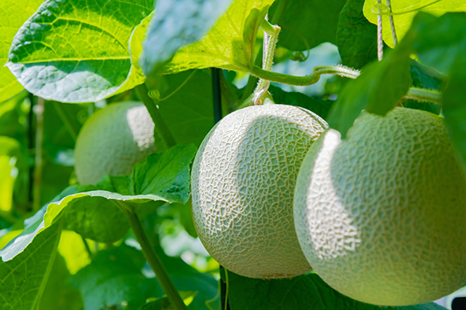
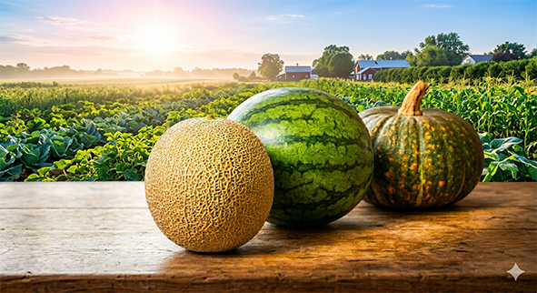
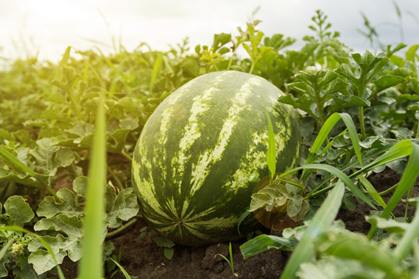
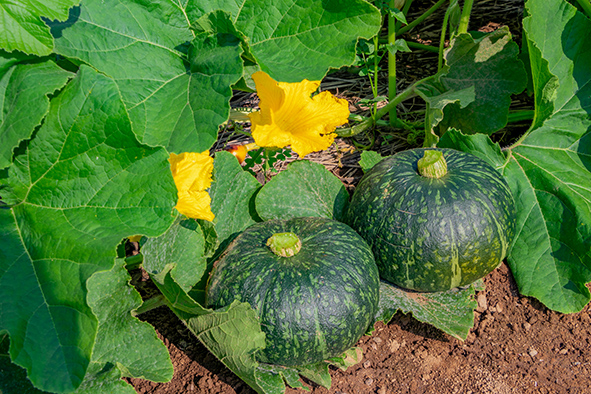
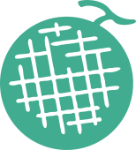

くるめメロン
「くるめメロン（久留米メロン）」は、主に神奈川県三浦市などで栽培されている、非常に希少価値の高い赤肉メロンです。その特徴は、高級感のある甘さととろけるような食感にあります。

2026年 7月
販売開始しました！

「くるめメロン（久留米メロン）」は、主に神奈川県三浦市などで栽培されている、非常に希少価値の高い赤肉メロンです。その特徴は、高級感のある甘さととろけるような食感にあります。

「くるめメロン（久留米メロン）」は、主に神奈川県三浦市などで栽培されている、非常に希少価値の高い赤肉メロンです。その特徴は、高級感のある甘さととろけるような食感にあります。

「くるめメロン（久留米メロン）」は、主に神奈川県三浦市などで栽培されている、非常に希少価値の高い赤肉メロンです。その特徴は、高級感のある甘さととろけるような食感にあります。

